Place the nodes based on the result of breadth first traversal. Not
recommended for complicated graphs.
Circle
Put nodes on a circle
Cola
Dynamic physical simulations of nodes with smooth animations.
CoSE-Bilken
The best choice for trees and graphs that are not too complicated. With animation. It is
computationally expensive, so it will take a noticeable time for large graphs.
Grid
Put nodes in grids
Random
Randomly place the nodes
Snap to grid
Display grid, allowing nodes to be snapped to the middle of grids
Spread
Maximize the use of the space, making nodes as far as from each other as possible
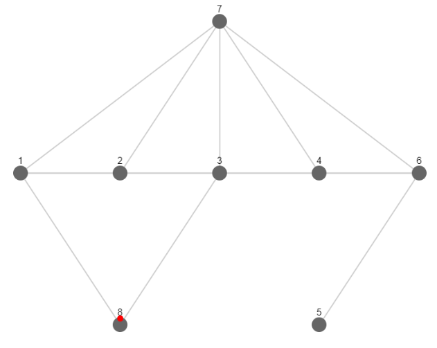
Breadth First
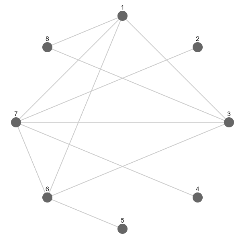
Circle
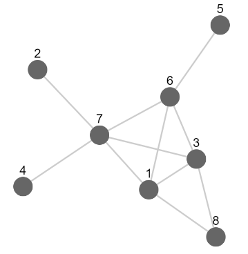
Cola
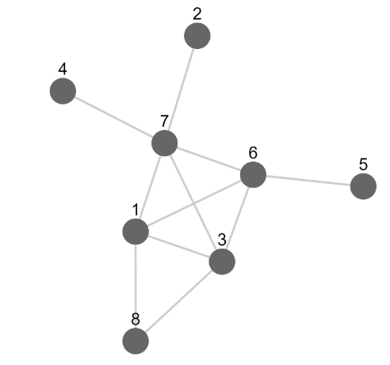
CoSE-Bilken
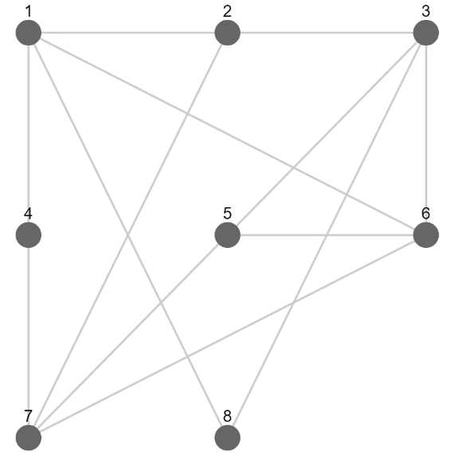
Grid
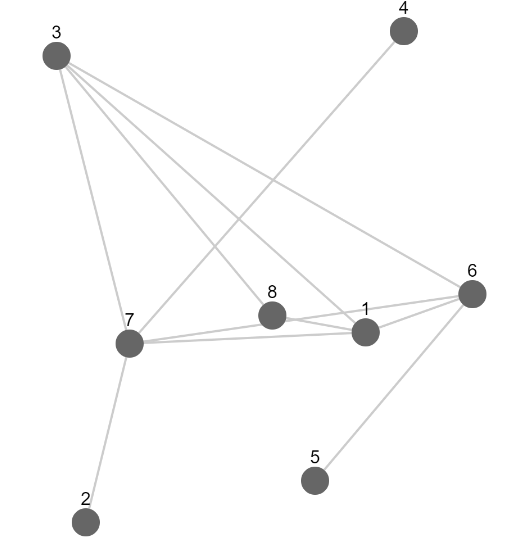
Random
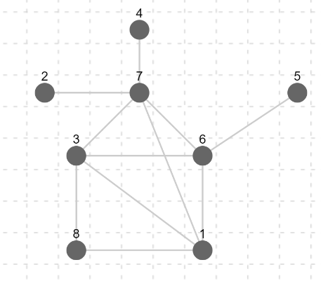
Snap-to-grid
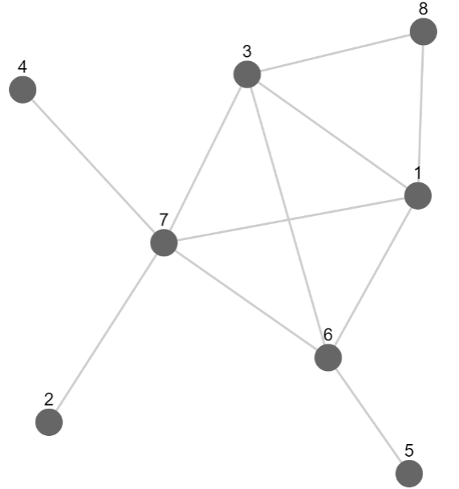
Spread
Other options
Auto-refresh: Refresh the layout after any addition / deletion of
elements
Hide result: Hide the result canvas, thereby increasing the size for drawing in the source canvas.
Create Nodes
To create a node, you can just click the 'add a node' button, which will create a node with
the minimal id that is not in the graph. If you want to create multiple nodes,
enter the number of nodes you want to create in the 'number' field.
Remove Nodes
To remove a node, enter the id of this node and click remove. You can remove multiple nodes by
entering their id respectively, separated by commas, or entering the range. Example: enter 1,2,3,4 or 1-4 to remove node 1, node 2, node 3, and node 4.
Create Edges
To create an edge connecting node src and node tg, enter the src-tg-num input box, which stands for
source-target-number. If the '-num' part is omitted,
it will create one edge connecting node src and node tg. Example: 1-2-3 will add three edges connecting node 1 and 2.
Alternatively, you can create edges by selecting nodes and clicking the 'add edge(s) between selected' button.
This will create edges connecting all nodes that you've selected.
Or you can use the edge handle plugin: Click the "enable drawing" button below the canvas
and start adding edges by simply dragging.
To put weight on these edges, input the weight number before adding the edge.
Weight can be omitted.
The default weight is 1.
Remove Edges
To remove an edge, just enter the src-tg-num for this edge, where num is the number of edges
connecting src and tg that will be removed.
If the '-num' part is omitted, it will remove one edge connecting node src and node tg.
Or you can just select all the edges that you want to remove, then click 'remove selected' button.
Example: 1-2-2 means remove 2 edges connecting node 1 and node 2.
Create Graph from Adjacency Matrix / Weight Matrix
Graph can also be created from the adjacency matrix or weight matrix.
The matrix must be declared as a javascript nested array format.
In the adjacency matrix,
the element in ith row and jth column denotes the number of edges connecting node i and node j.
In the weight matrix, the element in ith row and jth column denotes the
weight of the edge connecting node i andnode j.
If weight <= 0, it means that these two nodes are not connected
The whole matrix must be enclosed by a pair of square parentheses, and each row also should be
enclosed by a pair of square parentheses. Rows and columns are separated by commas.
In theory, the
matrix should be symmetric about the major diagonal (because the graph is undirected),
yet this is not checked. My program only take the half above the major diagonal.
Context menu
A circular menu will be shown when you right click on a node, an edge, or the canvas.
Thanks FontAwesome for creating these icons.
Meaning of menu options
Core
Nodes
Edges
Add an node
Add edges between selected node
Remove this edge
Remove selected
Remove this node
Duplicate this edge
Select all elements
BFS
Perform breadth first search starting at this node
Add/Modify weight of this edge
Refresh layout
DFS
Perform depth first search starting at this node
Enable/Disable draw mode
drag to connect nodes
Key bindings
Keys
Functions
Delete
Delete selected nodes on the source canvas
Alt + a
Add a node on the source canvas
Alt + c
Connect selected nodes on the source canvas
Alt + f
refresh the layout
Alt + r
Clear the result canvas
Alt + s
Clear the source canvas
Ctrl + a
Select all elements in the source canvas
Ctrl + c
Copy selected elements
Ctrl + f
Clear the color of the source canvas
Ctrl + r
Clear the color of the result canvas
Ctrl + s
Stop animation
Ctrl + v
Paste elements
Algorithms
Breadth First Search
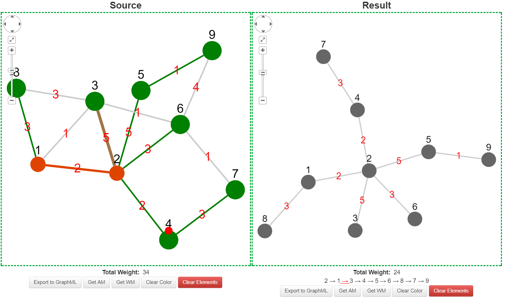
Breadth first search starting at node 2
Source canvas
Result canvas
Animation
Highlight the path which the algorithm has visited
Show the tree generated by this algorithm
Traverse the nodes and edges visited by order of visits
Depth First Search
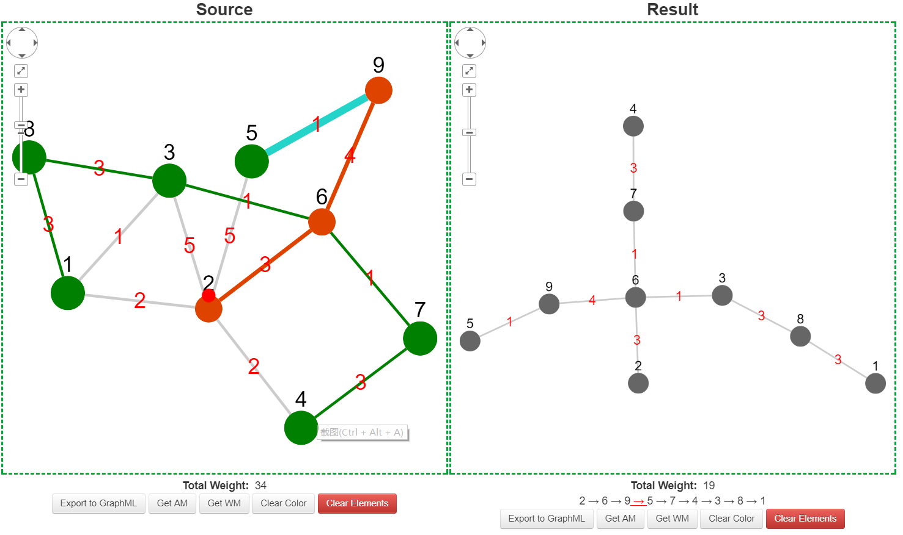
Depth first search starting at node 2
Source canvas
Result canvas
Animation
Highlight the path which the algorithm has visited
Show the tree generated by this algorithm
Traverse the nodes and edges visited by order of visits
Dijkstra's Algorithm
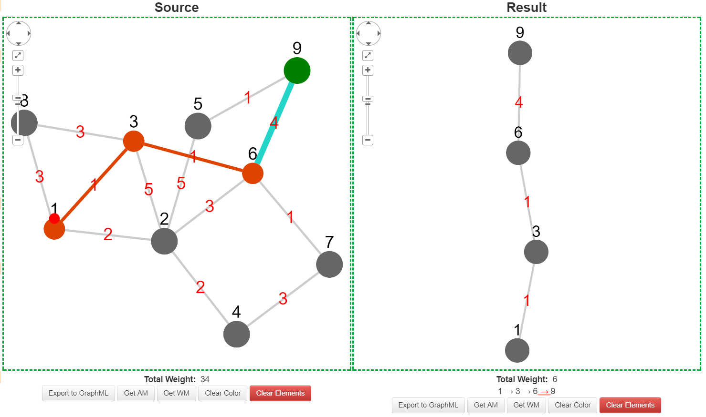
The minimal weight connector between node 1 and node 9
Source canvas
Result canvas
Animation
Highlight the minimal weight connector
Show the minimal weight connector
Trace the minimal weight connector
Dijkstra's Algorithm (Detailed)
This version of Dijkstra's algorithm will trace every single step,
including the label updates. 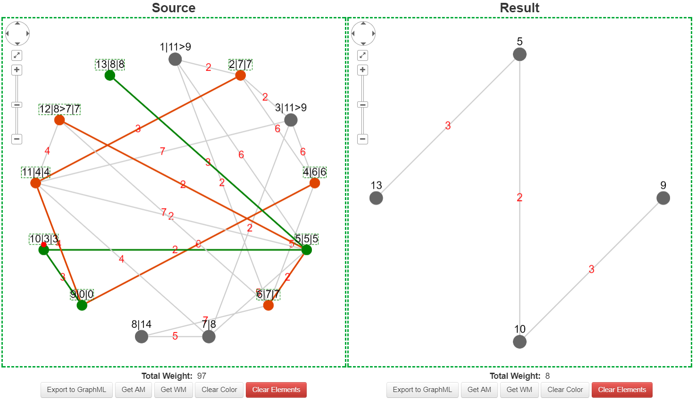
The minimal weight connector between node 9 and node 13
Source canvas
Result canvas
Animation
Highlight the minimal weight connector, all temporary labels, and all permanent labels. The
meaning of the labels: Note id|Temporary labels|Permanent label
Show the minimal weight connector
Trace the algorithm step by step
Kruskal's Algorithm
Find a minimal spanning tree in a given connected graph 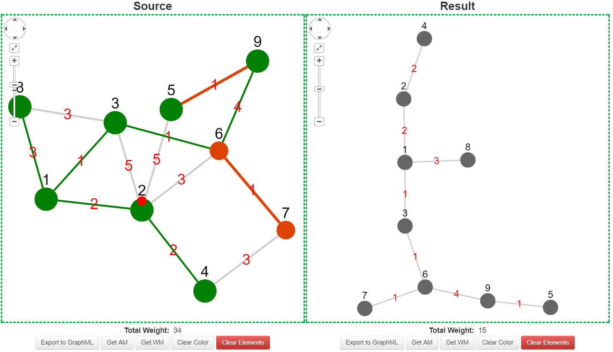
Running Kruskal's algorithm
Source canvas
Result canvas
Animation
Highlight the minimal spanning tree on the original graph
Show the minimal spanning tree obtained
Traverse the edges in the tree by order of visits
Prim's Algorithm
Find a minimal spanning tree in a given connected graph 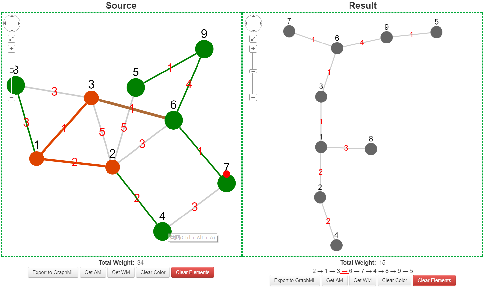
Prim's algorithm starting at node 2
Source canvas
Result canvas
Animation
Highlight the path which the algorithm has visited on the original graph
Show the minimal spanning tree obtained by this algorithm
Traverse the nodes in the tree by order of visits
Bridge Finding Algorithm
Find all bridges in an undirected graph. A bridge is an edge whose removal
causes the number of connected components to increase.
Reference: https://www.geeksforgeeks.org/bridge-in-a-graph/ 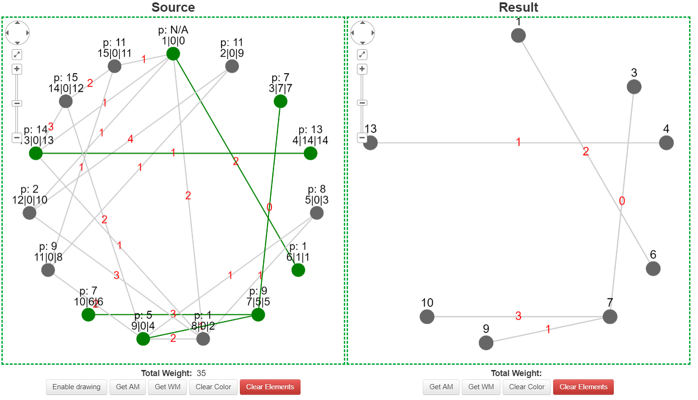
All bridges in a graph
Source canvas
Result canvas
Animation
Highlight all bridges. The format of node labels is
p: 'id of the parent node'
'node id'|'lowest discovery time'|'discovery time'
Show all the bridges only
N/A
Minimal Weight Cycle
Find a minimal weight cycle, which can be local (starting from a selected vertex)
or global, in a connected graph with no edge of negative weights Finding the global minimal weight cycle
Source canvas
Result canvas
Animation
Highlight the minimal weight cycle found
Show the minimal weight cycle found
None
Eulerian Trail/Cycle
Find an Eulerian cycle in an Eulerian graph or an Eulerian path in a
semi-Eulerian graph, by Hierholzer's algorithm. 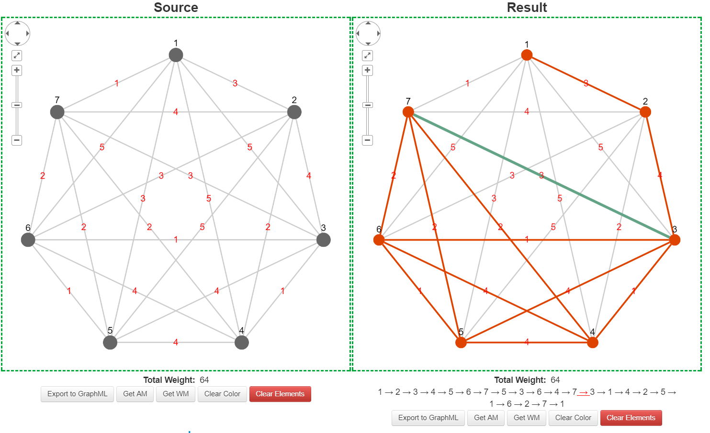
Finding an Eulerian cycle on weighted K7
Source canvas
Result canvas
Animation
No change
Show the original graph
Traverse the nodes and edges by order of visits in the Eulerian cycle obtained
Minimal Weight Matching
Find the minimal weight matching in a weighted undirected graph by Edmonds'
algorithm, also known as "paths, trees and flowers" 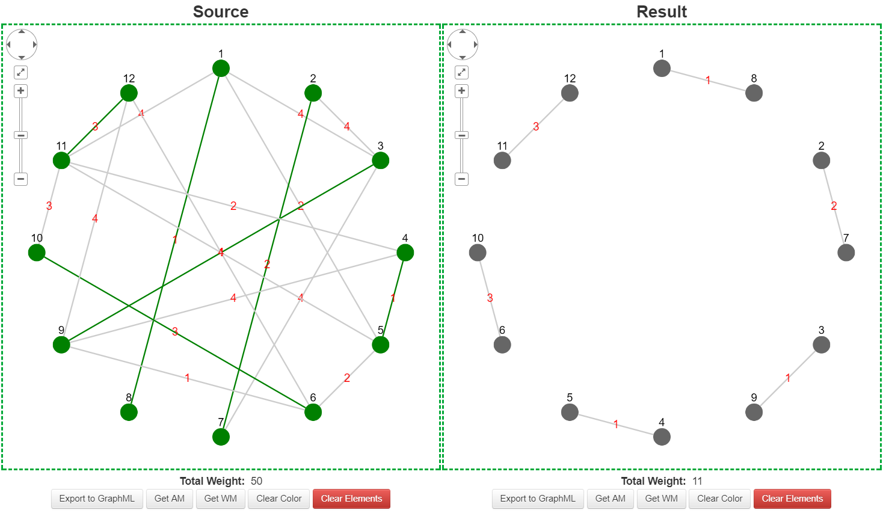
Finding the minimal weight matching on a weighted graph
Source canvas
Result canvas
Animation
Highlight the matches
Show the matches
None
Chinese Postman Problem
Solve the CPP by finding the minimal weight perfect matching between vertices
of odd degrees, thereby making the graph Eulerian. 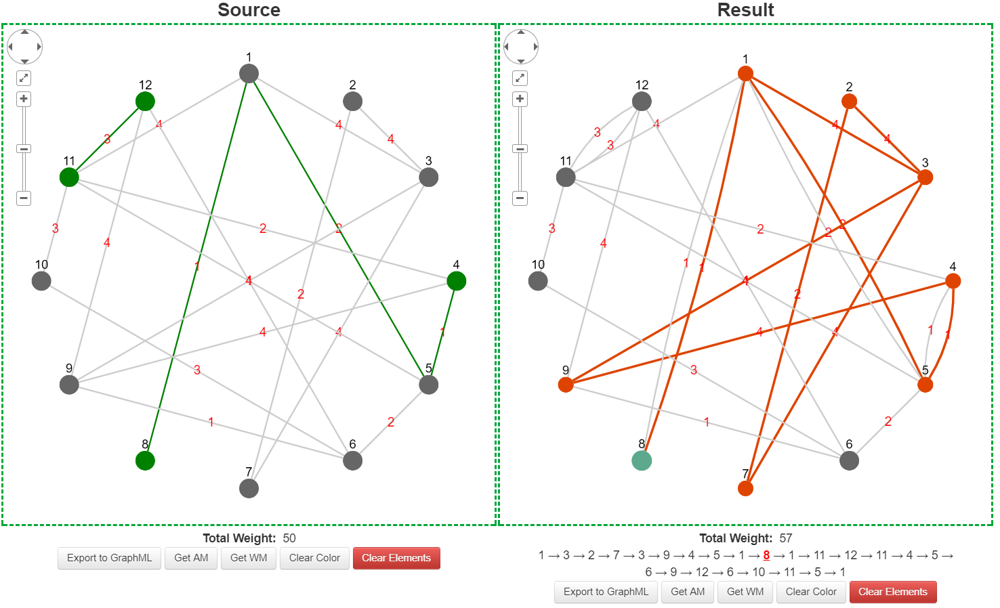
Solving the Chinese postman problem on a weighted graph
Source canvas
Result canvas
Animation
Highlight all odd nodes and edges that need to be duplicated (visited twice)
Show the graph after the duplication of these edges
Traverse all nodes and edges by order of visits in the Eulerian cycle obtained on the graph
after duplication of these edges
Hamiltonian Path/Cycle
Find a Hamiltonian path or cycle in a graph. If both are present, a Hamiltonian
cycle is returned. The time complexity of this algorithm is exponential, and it will start to take a
considerable amount of time on a graph with more than 20 vertices. 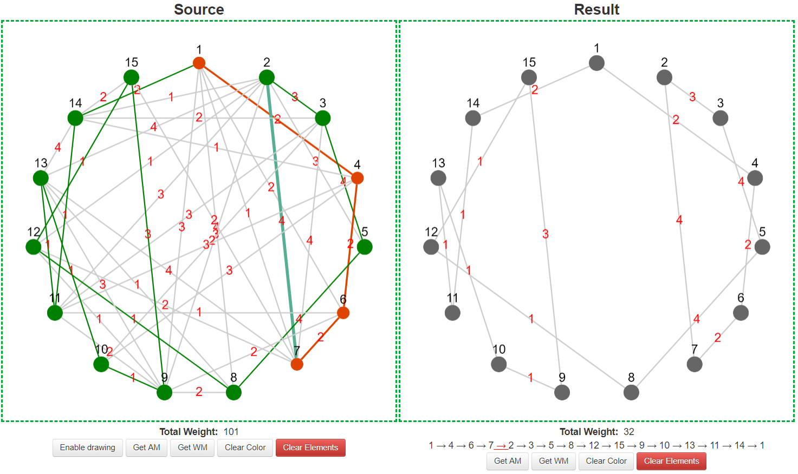
Finding a Hamiltonian cycle by backtracking
Source canvas
Result canvas
Animation
Highlight the Hamiltonian cycle obtained
Show the Hamiltonian cycle
Traverse the Hamiltonian cycle
Nearest Neighbor Algorithm
Find a Hamiltonian cycle of low but not necessarily of minimal weight in a
complete graph. If a node is selected, then it will be the starting point of the algorithm.
Otherwise this algorithm will be performed at every node, and the one of minimal total weight is returned. This
algorithm can run in a non-complete graph, but it may get stuck. 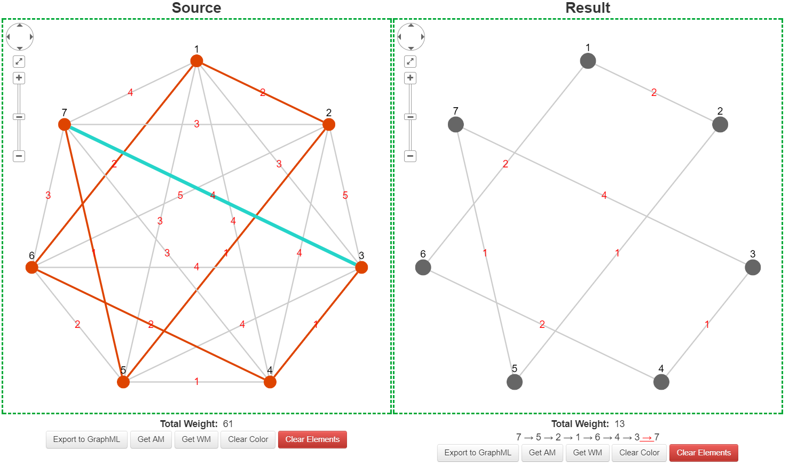
Finding a Hamiltonian cycle by the nearest neighbor algorithm on a complete
graph
Source canvas
Result canvas
Animation
Highlight the Hamiltonian cycle obtained
Show the Hamiltonian cycle
Traverse the Hamiltonian cycle
TSP Lower Bound
Find the lower bound for the travelling salesman problem in a graph by vertex deletion
algorithm. If a node is selected, then it will be the starting point of the algorithm.
Otherwise this algorithm will be performed at every node, and the one of maximal total weight is returned. 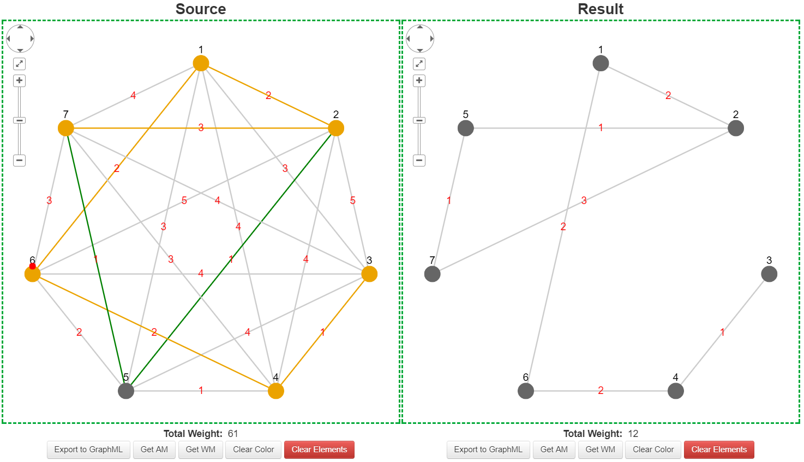
Finding the (global) lower bound for the traveling salesman problem in a
complete graph by vertex deletion algorithm
Source canvas
Result canvas
Animation
Highlight the two edges deleted and the minimal spanning tree for the remaining graph
Show the graph formed by these two edges and the minimal spanning tree
February 23rd, 2018
1. Fixed a bug of minimal weight matching (see this
commit)
November 13th, 2017
1. Fixed a bug of Dijkstra (detailed)
August 26th, 2017
1. Adapted ECMAScript 2015. Babel is used to compile the script.
2. Fixed some issues.
August 19th, 2017
1. Updated key bindings.
2. Improved performance by reducing style updates and redraws.
August 18th,2017
1. Implemented the Detailed Dijkstra's algorithm.
2. Now you can customize the animation duration.
3. Fixed minor issues.
4. Redesigned the instruction page (this page).
August 12th, 2017
1. Adapted Bootstrap
2. Added spread layout
August 9th, 2017
1. Added multi-threading support for the minimal weight matching algorithm, with the use of generators (ES6).
2. Applied jQuery.
3. Optimized the "Generate random graph" function.
Note that the multi-threading support will be automatically disabled if the browser doesn't support
generators
August 6th, 2017
1. Improved the efficiency of minimal weight matching algorithm by replacing objects with primitive data
types.
2. Redesigned the function for minimal weight matching so that it can also be applied to CPP.
August 4th, 2017
1. Optimized animation for Kruskal.
2. Implemented Prim's algorithm.
3. Fixed coding style issues and improved efficiency.
July 24th, 2017
1. Fixed issues regarding incorrect solutions found in CPP and minimal weight matching.
2. Rewrote the recursion for minimal weight matching, thus improving its efficiency.
July 23th, 2017
1. Added minimal weight matching algorithm.
2. Added context menu plugin.
3. Added the edge handle plugin.
4. Improved documentation.
5. Optimized coding structure.
6. Added some annotations.
July 2nd, 2017
1. Added Cola layout
-- a dynamic physics simulation.
2. Replace CoSE with CoSE-Bilken.
3. Added right-click menu.
4. Added zoom-pan-fit tool bar.
June 27th, 2017
1. Implemented algorithm for the Chinese Postman Problem.
June 26th, 2017
1. Added lower bound calculation for the Travelling Salesman Problem -- Vertex deletion algorithm.
2. Fixed the problem of finding non-existent solutions for Eulerian cycle.
3. Optimized the animation. Dijkstra and nearest neighbor are now supported.
June 25th, 2017
1. Implemented Eulerian cycle, by Hierholzer's algorithm, with animation.
2. Animations will be applied to other algorithms in the future, if applicable.
June 24th, 2017
1. Implemented nearest neighbor algorithm. Global optimum can be found.
June 16th, 2017
1. Now you can customize the weight range for the randomly generated graphs.
2. Random weight now can be applied to Kn and Kn,n graphs.
3. Implemented local/global minimal weight cycle.
June 11th, 2017
1. Added breadth first search algorithm.
2. Now you can generate random Kn and Kn,n graphs.
3. Added circle and grid layout
June 10th, 2017
1. Graph theory algorithm visualization tools first version published!
2. Added Kruskal's algorithm.
3. Added Dijkstra's algorithm.